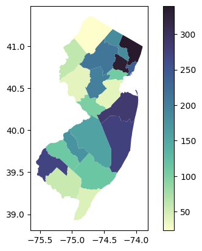

Covid in NJ#
import cmocean.cm as cmo
import folium
import geopandas as gpd
import matplotlib.cm as cm
import matplotlib.pyplot as plt
import numpy as np
import pandas as pd
from IPython.display import Video
from matplotlib.colors import rgb2hex
from pyinla.model import *
from pyinla.raster import *
from pyinla.spde import *
from pyinla.utils import *
from tqdm.auto import tqdm
df = pd.read_csv("./data/jersey_covid_2021-2022.csv")
df = df[df.date.apply(lambda x: "2021" in x).values]
population = pd.read_csv("./data/njpop.csv")
income = pd.read_csv("./data/njincome.csv")
pov = pd.read_csv("./data/njpoverty.csv")
geojson = gpd.read_file("./data/nj_county_boundaries.geojson")
geojson = geojson[["geometry", "COUNTY", "FIPSSTCO"]]
geojson["fips"] = geojson["FIPSSTCO"].astype(int)
geojson = geojson.drop("FIPSSTCO", axis=1)
gdf = (
geojson.merge(population, on="COUNTY")
.merge(income, on="COUNTY")
.merge(pov, on=["COUNTY", "fips"])
.merge(df, on="fips")
)
gdf["death_frac"] = gdf.deaths / gdf.cases
gdf[gdf.date == "2021-01-05"].plot("deaths", legend=True)
<AxesSubplot: >
for i in range(1, len(gdf)):
diff = gdf["cases"][i] - gdf["cases"][i - 1]
if diff < 0:
gdf.loc[i:, "cases"] = gdf.loc[i:, "cases"] + np.abs(diff)
diff = gdf["deaths"][i] - gdf["deaths"][i - 1]
if diff < 0:
gdf.loc[i:, "deaths"] = gdf.loc[i:, "deaths"] + np.abs(diff)
d = gdf.date[0]
for i, d in tqdm(enumerate(np.unique(gdf.date))):
ax = gdf[gdf.date == d].plot(
"death_frac",
cmap=cmo.deep,
legend=1,
vmin=0.0,
vmax=0.06,
norm=plt.Normalize(vmin=0.0, vmax=0.06),
)
ax.axis("off")
ax.set_title(d)
fig = ax.get_figure()
fig.savefig(f"./out/njdf-{str(i).zfill(3)}.jpg", dpi=300)
plt.close()
!ffmpeg -framerate 30 -pattern_type glob -i '*.jpg' -c:v libx264 -pix_fmt yuv420p out.mp4
Video("./out/out.mp4", width=500, height=600)
counties = np.unique(gdf.COUNTY)
adj = np.zeros((counties.size, counties.size))
for i in range(len(counties)):
for j in range(i, len(counties)):
if (
gdf[gdf.COUNTY == counties[i]]
.iloc[0]
.geometry.touches(gdf[gdf.COUNTY == counties[j]].iloc[0].geometry)
):
adj[i, j] = 1
adj[j, i] = 1
plt.plot(
gdf[gdf.COUNTY == "MERCER"].date.iloc[1:],
np.diff(gdf[gdf.COUNTY == "MERCER"].cases)
/ gdf[gdf.COUNTY == "MERCER"].pop2020.iloc[1:],
)
plt.xticks(plt.xticks()[0][::100]);
county_id = (ro.r("as.factor")(gdf.COUNTY)).astype(float)
county_id_2 = county_id
time_id = (ro.r("as.factor")(gdf.date)).astype(float)
g = rinla.inla_read_graph(adj)
formula1 = """
cases ~ f(county_id, model="bym", graph=g) + f(time_id, model="ar1") + poverty + income
"""
formula2 = """
cases ~ f(county_id, model="besag", graph=g) + f(time_id, model="rw2") + poverty + income
"""
formula3 = """
cases ~ 1 + f(county_id, model="besag", graph=g, group=time_id, control.group=list(model="ar1")) +
poverty + income
"""
diffcases = np.concatenate(
gdf.groupby("COUNTY")
.cases.apply(lambda x: np.concatenate(([0], np.diff(x))))
.values
)
res = inla(
formula=formula3,
family="poisson",
data=dict(
cases=diffcases,
county_id=county_id,
county_id_2=county_id,
time_id=time_id,
time_id_2=time_id,
poverty=gdf.poverty2021 / gdf.pop2021,
income=gdf.income2021 / 1_000,
g=g,
),
E=gdf.pop2021,
control_predictor=dict(compute=True),
control_compute=dict(config=True, return_marginals_predictor=True),
# control_mode=dict(result=res.result),
).improve_hyperpar()
GMRFLib_2order_approx: rescue NAN/INF values in logl for idx=1824
R[write to console]: Error in inla.inlaprogram.has.crashed() :
The inla-program exited with an error. Unless you interupted it yourself, please rerun with verbose=TRUE and check the output carefully.
If this does not help, please contact the developers at <help@r-inla.org>.
*** inla.core.safe: inla.program has crashed: rerun to get better initial values. try=1/2
R[write to console]:
---------------------------------------------------------------------------
RRuntimeError Traceback (most recent call last)
Cell In[617], line 1
----> 1 res = inla(
2 formula=formula3,
3 family="poisson",
4 data=dict(
5 cases=diffcases,
6 county_id=county_id,
7 county_id_2=county_id,
8 time_id=time_id,
9 time_id_2=time_id,
10 poverty=gdf.poverty2021 / gdf.pop2021,
11 income=gdf.income2021 / 1_000,
12 g=g,
13 ),
14 E=gdf.pop2021,
15 control_predictor=dict(compute=True),
16 control_compute=dict(config=True, return_marginals_predictor=True),
17 # control_mode=dict(result=res.result),
18 ).improve_hyperpar()
File ~/programs/pyinla/pyinla/model.py:108, in inla(formula, data, family, quantiles, E, scale, weights, n_trials, control_compute, control_predictor, control_family, control_inla, control_fixed, control_mode, control_expert, control_hazard, control_lincomb, control_update, control_lp_scale, control_pardiso, verbose, only_hyperparam, num_threads, blas_num_threads, keep, working_directory, silent, inla_mode, safe, debug)
105 if weights is None:
106 weights = R_NULL
--> 108 result = rinla.inla(
109 formula=ro.r(formula),
110 data=convert_py2r(data),
111 family=family,
112 quantiles=quantiles,
113 E=E,
114 scale=scale,
115 Ntrials=n_trials,
116 weights=weights,
117 **control_params,
118 verbose=verbose,
119 only_hyperparam=only_hyperparam,
120 num_threads=num_threads,
121 blas_num_threads=blas_num_threads,
122 keep=keep,
123 working_directory=working_directory,
124 silent=silent,
125 inla_mode=inla_mode,
126 safe=safe,
127 debug=debug,
128 )
130 return Result(result)
File /opt/homebrew/Caskroom/miniconda/base/envs/main/lib/python3.10/site-packages/rpy2/robjects/functions.py:204, in SignatureTranslatedFunction.__call__(self, *args, **kwargs)
202 v = kwargs.pop(k)
203 kwargs[r_k] = v
--> 204 return (super(SignatureTranslatedFunction, self)
205 .__call__(*args, **kwargs))
File /opt/homebrew/Caskroom/miniconda/base/envs/main/lib/python3.10/site-packages/rpy2/robjects/functions.py:127, in Function.__call__(self, *args, **kwargs)
125 else:
126 new_kwargs[k] = cv.py2rpy(v)
--> 127 res = super(Function, self).__call__(*new_args, **new_kwargs)
128 res = cv.rpy2py(res)
129 return res
File /opt/homebrew/Caskroom/miniconda/base/envs/main/lib/python3.10/site-packages/rpy2/rinterface_lib/conversion.py:45, in _cdata_res_to_rinterface.<locals>._(*args, **kwargs)
44 def _(*args, **kwargs):
---> 45 cdata = function(*args, **kwargs)
46 # TODO: test cdata is of the expected CType
47 return _cdata_to_rinterface(cdata)
File /opt/homebrew/Caskroom/miniconda/base/envs/main/lib/python3.10/site-packages/rpy2/rinterface.py:815, in SexpClosure.__call__(self, *args, **kwargs)
808 res = rmemory.protect(
809 openrlib.rlib.R_tryEval(
810 call_r,
811 call_context.__sexp__._cdata,
812 error_occured)
813 )
814 if error_occured[0]:
--> 815 raise embedded.RRuntimeError(_rinterface._geterrmessage())
816 return res
RRuntimeError: Error in inla.inlaprogram.has.crashed() :
The inla-program exited with an error. Unless you interupted it yourself, please rerun with verbose=TRUE and check the output carefully.
If this does not help, please contact the developers at <help@r-inla.org>.
res
Time used:
= 1.9, = 0.362, = 0.141, = 2.41
Fixed effects:
mean sd 0.025quant 0.5quant 0.975quant mode kld
(Intercept) -11.797 1.208 -14.180 -11.799 -9.400 -11.803 0
poverty 10.789 4.926 1.002 10.801 20.502 10.823 0
income 0.028 0.011 0.007 0.028 0.049 0.028 0
Random effects:
Name Model
county_id BYM model
time_id AR1 model
Model hyperparameters:
mean sd 0.025quant
Precision for county_id (iid component) 3195.291 4576.737 230.674
Precision for county_id (spatial component) 1.212 0.387 0.599
Precision for time_id 0.602 0.147 0.351
Rho for time_id 0.902 0.024 0.849
0.5quant 0.975quant mode
Precision for county_id (iid component) 1829.171 1.45e+04 600.523
Precision for county_id (spatial component) 1.165 2.10e+00 1.074
Precision for time_id 0.591 9.23e-01 0.571
Rho for time_id 0.904 9.44e-01 0.907
Marginal log-Likelihood: -71697.73
is computed
Posterior summaries for the linear predictor and the fitted values are computed
(Posterior marginals needs also 'control.compute=list(return.marginals.predictor=TRUE)')
res.get_marginal_type("fixed").get_marginal("poverty").spline().plot()
<AxesSubplot: >
rr_mode = res.get_summary("fitted.values")["mode"]
gdf[::365].plot(
np.log10(rr_mode[::365] * gdf.pop2021[::365]),
legend=1,
)
<AxesSubplot: >
for i in range(21):
plt.plot(
gdf.date[:365],
rr_mode[i * 365 : (i + 1) * 365] * gdf.pop2021[i * 365 : (i + 1) * 365]
- diffcases[i * 365 : (i + 1) * 365],
)
plt.xticks(plt.xticks()[0][::100])
plt.ylim(-700, 700)
(-700.0, 700.0)
min(np.log(rr_mode[:] * gdf.pop2021[:]))
-2.1285875172746276
i = 100
ax = gdf[i::365].plot(
rr_mode[i::365] * gdf.pop2021[i::365],
legend=1,
# norm=plt.Normalize(-2.1, 8.5),
cmap=cmo.deep,
)

for i in tqdm(range(364)):
ax = gdf[i::365].plot(
rr_mode[i::365] * gdf.pop2021[i::365],
legend=1,
norm=plt.Normalize(0, 500),
cmap=cmo.deep,
)
ax.axis("off")
ax.set_title(f"{np.unique(gdf.date)[i]}")
fig = ax.get_figure()
fig.savefig(f"./out/inlapred-{str(i).zfill(3)}.jpg", dpi=300)
plt.close()
!ffmpeg -y -framerate 30 -pattern_type glob -i 'out/inlapred*.jpg' -c:v libx264 -pix_fmt yuv420p out/inlapred.mp4
ffmpeg version 5.1.2 Copyright (c) 2000-2022 the FFmpeg developers
built with Apple clang version 14.0.0 (clang-1400.0.29.202)
configuration: --prefix=/opt/homebrew/Cellar/ffmpeg/5.1.2_6 --enable-shared --enable-pthreads --enable-version3 --cc=clang --host-cflags= --host-ldflags= --enable-ffplay --enable-gnutls --enable-gpl --enable-libaom --enable-libaribb24 --enable-libbluray --enable-libdav1d --enable-libmp3lame --enable-libopus --enable-librav1e --enable-librist --enable-librubberband --enable-libsnappy --enable-libsrt --enable-libsvtav1 --enable-libtesseract --enable-libtheora --enable-libvidstab --enable-libvmaf --enable-libvorbis --enable-libvpx --enable-libwebp --enable-libx264 --enable-libx265 --enable-libxml2 --enable-libxvid --enable-lzma --enable-libfontconfig --enable-libfreetype --enable-frei0r --enable-libass --enable-libopencore-amrnb --enable-libopencore-amrwb --enable-libopenjpeg --enable-libspeex --enable-libsoxr --enable-libzmq --enable-libzimg --disable-libjack --disable-indev=jack --enable-videotoolbox --enable-neon
libavutil 57. 28.100 / 57. 28.100
libavcodec 59. 37.100 / 59. 37.100
libavformat 59. 27.100 / 59. 27.100
libavdevice 59. 7.100 / 59. 7.100
libavfilter 8. 44.100 / 8. 44.100
libswscale 6. 7.100 / 6. 7.100
libswresample 4. 7.100 / 4. 7.100
libpostproc 56. 6.100 / 56. 6.100
Input #0, image2, from 'out/inlapred*.jpg':
Duration: 00:00:12.13, start: 0.000000, bitrate: N/A
Stream #0:0: Video: mjpeg (Baseline), yuvj420p(pc, bt470bg/unknown/unknown), 1920x1440 [SAR 300:300 DAR 4:3], 30 fps, 30 tbr, 30 tbn
Stream mapping:
Stream #0:0 -> #0:0 (mjpeg (native) -> h264 (libx264))
Press [q] to stop, [?] for help
[swscaler @ 0x130008000] [swscaler @ 0x120008000] deprecated pixel format used, make sure you did set range correctly
[swscaler @ 0x130008000] [swscaler @ 0x120018000] deprecated pixel format used, make sure you did set range correctly
[swscaler @ 0x130008000] [swscaler @ 0x120028000] deprecated pixel format used, make sure you did set range correctly
[swscaler @ 0x130008000] [swscaler @ 0x120038000] deprecated pixel format used, make sure you did set range correctly
[swscaler @ 0x130008000] [swscaler @ 0x120048000] deprecated pixel format used, make sure you did set range correctly
[swscaler @ 0x130008000] [swscaler @ 0x120058000] deprecated pixel format used, make sure you did set range correctly
[swscaler @ 0x130008000] [swscaler @ 0x120068000] deprecated pixel format used, make sure you did set range correctly
[swscaler @ 0x130008000] [swscaler @ 0x120078000] deprecated pixel format used, make sure you did set range correctly
[swscaler @ 0x130008000] [swscaler @ 0x120088000] deprecated pixel format used, make sure you did set range correctly
[swscaler @ 0x130008000] [swscaler @ 0x120098000] deprecated pixel format used, make sure you did set range correctly
[swscaler @ 0x130008000] [swscaler @ 0x1200a8000] deprecated pixel format used, make sure you did set range correctly
[swscaler @ 0x128008000] [swscaler @ 0x128018000] deprecated pixel format used, make sure you did set range correctly
[swscaler @ 0x128008000] [swscaler @ 0x128028000] deprecated pixel format used, make sure you did set range correctly
[swscaler @ 0x128008000] [swscaler @ 0x128038000] deprecated pixel format used, make sure you did set range correctly
[swscaler @ 0x128008000] [swscaler @ 0x128048000] deprecated pixel format used, make sure you did set range correctly
[swscaler @ 0x128008000] [swscaler @ 0x128058000] deprecated pixel format used, make sure you did set range correctly
[swscaler @ 0x128008000] [swscaler @ 0x128068000] deprecated pixel format used, make sure you did set range correctly
[swscaler @ 0x128008000] [swscaler @ 0x128078000] deprecated pixel format used, make sure you did set range correctly
[swscaler @ 0x128008000] [swscaler @ 0x128088000] deprecated pixel format used, make sure you did set range correctly
[swscaler @ 0x128008000] [swscaler @ 0x128098000] deprecated pixel format used, make sure you did set range correctly
[swscaler @ 0x128008000] [swscaler @ 0x1280a8000] deprecated pixel format used, make sure you did set range correctly
[swscaler @ 0x128008000] [swscaler @ 0x1280b8000] deprecated pixel format used, make sure you did set range correctly
[swscaler @ 0x110008000] [swscaler @ 0x110018000] deprecated pixel format used, make sure you did set range correctly
[swscaler @ 0x110008000] [swscaler @ 0x110028000] deprecated pixel format used, make sure you did set range correctly
[swscaler @ 0x110008000] [swscaler @ 0x110038000] deprecated pixel format used, make sure you did set range correctly
[swscaler @ 0x110008000] [swscaler @ 0x110048000] deprecated pixel format used, make sure you did set range correctly
[swscaler @ 0x110008000] [swscaler @ 0x110058000] deprecated pixel format used, make sure you did set range correctly
[swscaler @ 0x110008000] [swscaler @ 0x110068000] deprecated pixel format used, make sure you did set range correctly
[swscaler @ 0x110008000] [swscaler @ 0x110078000] deprecated pixel format used, make sure you did set range correctly
[swscaler @ 0x110008000] [swscaler @ 0x110088000] deprecated pixel format used, make sure you did set range correctly
[swscaler @ 0x110008000] [swscaler @ 0x110098000] deprecated pixel format used, make sure you did set range correctly
[swscaler @ 0x110008000] [swscaler @ 0x1100a8000] deprecated pixel format used, make sure you did set range correctly
[swscaler @ 0x110008000] [swscaler @ 0x130008000] deprecated pixel format used, make sure you did set range correctly
[swscaler @ 0x148008000] [swscaler @ 0x140a48000] deprecated pixel format used, make sure you did set range correctly
[swscaler @ 0x148008000] [swscaler @ 0x140a58000] deprecated pixel format used, make sure you did set range correctly
[swscaler @ 0x148008000] [swscaler @ 0x140a68000] deprecated pixel format used, make sure you did set range correctly
[swscaler @ 0x148008000] [swscaler @ 0x140a78000] deprecated pixel format used, make sure you did set range correctly
[swscaler @ 0x148008000] [swscaler @ 0x140a88000] deprecated pixel format used, make sure you did set range correctly
[swscaler @ 0x148008000] [swscaler @ 0x140a98000] deprecated pixel format used, make sure you did set range correctly
[swscaler @ 0x148008000] [swscaler @ 0x140aa8000] deprecated pixel format used, make sure you did set range correctly
[swscaler @ 0x148008000] [swscaler @ 0x140ab8000] deprecated pixel format used, make sure you did set range correctly
[swscaler @ 0x148008000] [swscaler @ 0x140ac8000] deprecated pixel format used, make sure you did set range correctly
[swscaler @ 0x148008000] [swscaler @ 0x140ad8000] deprecated pixel format used, make sure you did set range correctly
[swscaler @ 0x148008000] [swscaler @ 0x140ae8000] deprecated pixel format used, make sure you did set range correctly
[libx264 @ 0x13d905ff0] using SAR=1/1
[libx264 @ 0x13d905ff0] using cpu capabilities: ARMv8 NEON
[libx264 @ 0x13d905ff0] profile High, level 5.0, 4:2:0, 8-bit
[libx264 @ 0x13d905ff0] 264 - core 164 r3095 baee400 - H.264/MPEG-4 AVC codec - Copyleft 2003-2022 - http://www.videolan.org/x264.html - options: cabac=1 ref=3 deblock=1:0:0 analyse=0x3:0x113 me=hex subme=7 psy=1 psy_rd=1.00:0.00 mixed_ref=1 me_range=16 chroma_me=1 trellis=1 8x8dct=1 cqm=0 deadzone=21,11 fast_pskip=1 chroma_qp_offset=-2 threads=15 lookahead_threads=2 sliced_threads=0 nr=0 decimate=1 interlaced=0 bluray_compat=0 constrained_intra=0 bframes=3 b_pyramid=2 b_adapt=1 b_bias=0 direct=1 weightb=1 open_gop=0 weightp=2 keyint=250 keyint_min=25 scenecut=40 intra_refresh=0 rc_lookahead=40 rc=crf mbtree=1 crf=23.0 qcomp=0.60 qpmin=0 qpmax=69 qpstep=4 ip_ratio=1.40 aq=1:1.00
Output #0, mp4, to 'out/inlapred.mp4':
Metadata:
encoder : Lavf59.27.100
Stream #0:0: Video: h264 (avc1 / 0x31637661), yuv420p(tv, bt470bg/unknown/unknown, progressive), 1920x1440 [SAR 1:1 DAR 4:3], q=2-31, 30 fps, 15360 tbn
Metadata:
encoder : Lavc59.37.100 libx264
Side data:
cpb: bitrate max/min/avg: 0/0/0 buffer size: 0 vbv_delay: N/A
frame= 364 fps=177 q=-1.0 Lsize= 1122kB time=00:00:12.03 bitrate= 764.0kbits/s speed=5.86x
video:1118kB audio:0kB subtitle:0kB other streams:0kB global headers:0kB muxing overhead: 0.406426%
[libx264 @ 0x13d905ff0] frame I:2 Avg QP:21.34 size: 17144
[libx264 @ 0x13d905ff0] frame P:201 Avg QP:24.55 size: 4061
[libx264 @ 0x13d905ff0] frame B:161 Avg QP:21.75 size: 1823
[libx264 @ 0x13d905ff0] consecutive B-frames: 28.0% 33.5% 16.5% 22.0%
[libx264 @ 0x13d905ff0] mb I I16..4: 10.9% 86.7% 2.4%
[libx264 @ 0x13d905ff0] mb P I16..4: 0.9% 7.3% 0.2% P16..4: 3.1% 0.2% 0.3% 0.0% 0.0% skip:88.1%
[libx264 @ 0x13d905ff0] mb B I16..4: 2.7% 1.5% 0.0% B16..8: 1.7% 0.1% 0.0% direct: 1.1% skip:92.8% L0:57.3% L1:38.6% BI: 4.1%
[libx264 @ 0x13d905ff0] 8x8 transform intra:73.2% inter:80.4%
[libx264 @ 0x13d905ff0] coded y,uvDC,uvAC intra: 4.6% 12.1% 4.5% inter: 1.2% 1.9% 0.1%
[libx264 @ 0x13d905ff0] i16 v,h,dc,p: 76% 18% 6% 0%
[libx264 @ 0x13d905ff0] i8 v,h,dc,ddl,ddr,vr,hd,vl,hu: 43% 11% 42% 1% 1% 1% 1% 0% 0%
[libx264 @ 0x13d905ff0] i4 v,h,dc,ddl,ddr,vr,hd,vl,hu: 43% 16% 22% 4% 3% 3% 3% 4% 1%
[libx264 @ 0x13d905ff0] i8c dc,h,v,p: 75% 11% 13% 1%
[libx264 @ 0x13d905ff0] Weighted P-Frames: Y:14.9% UV:6.5%
[libx264 @ 0x13d905ff0] ref P L0: 27.4% 12.2% 34.7% 22.5% 3.2%
[libx264 @ 0x13d905ff0] ref B L0: 66.1% 25.1% 8.8%
[libx264 @ 0x13d905ff0] ref B L1: 92.6% 7.4%
[libx264 @ 0x13d905ff0] kb/s:754.23
Video("./out/inlapred.mp4", width=500, height=600)
for i in tqdm(range(364)):
ax = gdf[i::365].plot(
(rr_mode[i::365] * gdf.pop2021[i::365] - diffcases[i::365]) / diffcases[i::365],
legend=1,
norm=plt.Normalize(-0.2, 0.2),
vmin=-0.1,
vmax=0.1,
cmap="RdBu",
)
ax.axis("off")
ax.set_title(f"{np.unique(gdf.date)[i]}")
fig = ax.get_figure()
fig.savefig(f"./out/inlares-{str(i).zfill(3)}.jpg", dpi=300)
plt.close()
!ffmpeg -y -framerate 30 -pattern_type glob -i 'out/inlares*.jpg' -c:v libx264 -pix_fmt yuv420p out/inlares.mp4
ffmpeg version 5.1.2 Copyright (c) 2000-2022 the FFmpeg developers
built with Apple clang version 14.0.0 (clang-1400.0.29.202)
configuration: --prefix=/opt/homebrew/Cellar/ffmpeg/5.1.2_6 --enable-shared --enable-pthreads --enable-version3 --cc=clang --host-cflags= --host-ldflags= --enable-ffplay --enable-gnutls --enable-gpl --enable-libaom --enable-libaribb24 --enable-libbluray --enable-libdav1d --enable-libmp3lame --enable-libopus --enable-librav1e --enable-librist --enable-librubberband --enable-libsnappy --enable-libsrt --enable-libsvtav1 --enable-libtesseract --enable-libtheora --enable-libvidstab --enable-libvmaf --enable-libvorbis --enable-libvpx --enable-libwebp --enable-libx264 --enable-libx265 --enable-libxml2 --enable-libxvid --enable-lzma --enable-libfontconfig --enable-libfreetype --enable-frei0r --enable-libass --enable-libopencore-amrnb --enable-libopencore-amrwb --enable-libopenjpeg --enable-libspeex --enable-libsoxr --enable-libzmq --enable-libzimg --disable-libjack --disable-indev=jack --enable-videotoolbox --enable-neon
libavutil 57. 28.100 / 57. 28.100
libavcodec 59. 37.100 / 59. 37.100
libavformat 59. 27.100 / 59. 27.100
libavdevice 59. 7.100 / 59. 7.100
libavfilter 8. 44.100 / 8. 44.100
libswscale 6. 7.100 / 6. 7.100
libswresample 4. 7.100 / 4. 7.100
libpostproc 56. 6.100 / 56. 6.100
Input #0, image2, from 'out/inlares*.jpg':
Duration: 00:00:12.13, start: 0.000000, bitrate: N/A
Stream #0:0: Video: mjpeg (Baseline), yuvj420p(pc, bt470bg/unknown/unknown), 1920x1440 [SAR 300:300 DAR 4:3], 30 fps, 30 tbr, 30 tbn
Stream mapping:
Stream #0:0 -> #0:0 (mjpeg (native) -> h264 (libx264))
Press [q] to stop, [?] for help
[swscaler @ 0x108008000] [swscaler @ 0x108018000] deprecated pixel format used, make sure you did set range correctly
[swscaler @ 0x108008000] [swscaler @ 0x108028000] deprecated pixel format used, make sure you did set range correctly
[swscaler @ 0x108008000] [swscaler @ 0x108038000] deprecated pixel format used, make sure you did set range correctly
[swscaler @ 0x108008000] [swscaler @ 0x108048000] deprecated pixel format used, make sure you did set range correctly
[swscaler @ 0x108008000] [swscaler @ 0x108058000] deprecated pixel format used, make sure you did set range correctly
[swscaler @ 0x108008000] [swscaler @ 0x108068000] deprecated pixel format used, make sure you did set range correctly
[swscaler @ 0x108008000] [swscaler @ 0x108078000] deprecated pixel format used, make sure you did set range correctly
[swscaler @ 0x108008000] [swscaler @ 0x108088000] deprecated pixel format used, make sure you did set range correctly
[swscaler @ 0x108008000] [swscaler @ 0x108098000] deprecated pixel format used, make sure you did set range correctly
[swscaler @ 0x108008000] [swscaler @ 0x1080a8000] deprecated pixel format used, make sure you did set range correctly
[swscaler @ 0x108008000] [swscaler @ 0x1080b8000] deprecated pixel format used, make sure you did set range correctly
[swscaler @ 0x118468000] [swscaler @ 0x118478000] deprecated pixel format used, make sure you did set range correctly
[swscaler @ 0x118468000] [swscaler @ 0x118488000] deprecated pixel format used, make sure you did set range correctly
[swscaler @ 0x118468000] [swscaler @ 0x118498000] deprecated pixel format used, make sure you did set range correctly
[swscaler @ 0x118468000] [swscaler @ 0x1184a8000] deprecated pixel format used, make sure you did set range correctly
[swscaler @ 0x118468000] [swscaler @ 0x1184b8000] deprecated pixel format used, make sure you did set range correctly
[swscaler @ 0x118468000] [swscaler @ 0x1184c8000] deprecated pixel format used, make sure you did set range correctly
[swscaler @ 0x118468000] [swscaler @ 0x1184d8000] deprecated pixel format used, make sure you did set range correctly
[swscaler @ 0x118468000] [swscaler @ 0x1184e8000] deprecated pixel format used, make sure you did set range correctly
[swscaler @ 0x118468000] [swscaler @ 0x1184f8000] deprecated pixel format used, make sure you did set range correctly
[swscaler @ 0x118468000] [swscaler @ 0x118508000] deprecated pixel format used, make sure you did set range correctly
[swscaler @ 0x118468000] [swscaler @ 0x118518000] deprecated pixel format used, make sure you did set range correctly
[swscaler @ 0x118468000] [swscaler @ 0x128530000] deprecated pixel format used, make sure you did set range correctly
[swscaler @ 0x118468000] [swscaler @ 0x128540000] deprecated pixel format used, make sure you did set range correctly
[swscaler @ 0x118468000] [swscaler @ 0x128020000] deprecated pixel format used, make sure you did set range correctly
[swscaler @ 0x118468000] [swscaler @ 0x128550000] deprecated pixel format used, make sure you did set range correctly
[swscaler @ 0x118468000] [swscaler @ 0x128560000] deprecated pixel format used, make sure you did set range correctly
[swscaler @ 0x118468000] [swscaler @ 0x128570000] deprecated pixel format used, make sure you did set range correctly
[swscaler @ 0x118468000] [swscaler @ 0x128580000] deprecated pixel format used, make sure you did set range correctly
[swscaler @ 0x118468000] [swscaler @ 0x128590000] deprecated pixel format used, make sure you did set range correctly
[swscaler @ 0x118468000] [swscaler @ 0x1285a0000] deprecated pixel format used, make sure you did set range correctly
[swscaler @ 0x118468000] [swscaler @ 0x1285b0000] deprecated pixel format used, make sure you did set range correctly
[swscaler @ 0x118468000] [swscaler @ 0x1285c0000] deprecated pixel format used, make sure you did set range correctly
[swscaler @ 0x130008000] [swscaler @ 0x108008000] deprecated pixel format used, make sure you did set range correctly
[swscaler @ 0x130008000] [swscaler @ 0x108018000] deprecated pixel format used, make sure you did set range correctly
[swscaler @ 0x130008000] [swscaler @ 0x108028000] deprecated pixel format used, make sure you did set range correctly
[swscaler @ 0x130008000] [swscaler @ 0x108038000] deprecated pixel format used, make sure you did set range correctly
[swscaler @ 0x130008000] [swscaler @ 0x108048000] deprecated pixel format used, make sure you did set range correctly
[swscaler @ 0x130008000] [swscaler @ 0x108058000] deprecated pixel format used, make sure you did set range correctly
[swscaler @ 0x130008000] [swscaler @ 0x108068000] deprecated pixel format used, make sure you did set range correctly
[swscaler @ 0x130008000] [swscaler @ 0x108078000] deprecated pixel format used, make sure you did set range correctly
[swscaler @ 0x130008000] [swscaler @ 0x108088000] deprecated pixel format used, make sure you did set range correctly
[swscaler @ 0x130008000] [swscaler @ 0x108098000] deprecated pixel format used, make sure you did set range correctly
[swscaler @ 0x130008000] [swscaler @ 0x1080a8000] deprecated pixel format used, make sure you did set range correctly
[libx264 @ 0x122005ff0] using SAR=1/1
[libx264 @ 0x122005ff0] using cpu capabilities: ARMv8 NEON
[libx264 @ 0x122005ff0] profile High, level 5.0, 4:2:0, 8-bit
[libx264 @ 0x122005ff0] 264 - core 164 r3095 baee400 - H.264/MPEG-4 AVC codec - Copyleft 2003-2022 - http://www.videolan.org/x264.html - options: cabac=1 ref=3 deblock=1:0:0 analyse=0x3:0x113 me=hex subme=7 psy=1 psy_rd=1.00:0.00 mixed_ref=1 me_range=16 chroma_me=1 trellis=1 8x8dct=1 cqm=0 deadzone=21,11 fast_pskip=1 chroma_qp_offset=-2 threads=15 lookahead_threads=2 sliced_threads=0 nr=0 decimate=1 interlaced=0 bluray_compat=0 constrained_intra=0 bframes=3 b_pyramid=2 b_adapt=1 b_bias=0 direct=1 weightb=1 open_gop=0 weightp=2 keyint=250 keyint_min=25 scenecut=40 intra_refresh=0 rc_lookahead=40 rc=crf mbtree=1 crf=23.0 qcomp=0.60 qpmin=0 qpmax=69 qpstep=4 ip_ratio=1.40 aq=1:1.00
Output #0, mp4, to 'out/inlares.mp4':
Metadata:
encoder : Lavf59.27.100
Stream #0:0: Video: h264 (avc1 / 0x31637661), yuv420p(tv, bt470bg/unknown/unknown, progressive), 1920x1440 [SAR 1:1 DAR 4:3], q=2-31, 30 fps, 15360 tbn
Metadata:
encoder : Lavc59.37.100 libx264
Side data:
cpb: bitrate max/min/avg: 0/0/0 buffer size: 0 vbv_delay: N/A
frame= 364 fps=149 q=-1.0 Lsize= 2040kB time=00:00:12.03 bitrate=1388.5kbits/s speed=4.92x
video:2036kB audio:0kB subtitle:0kB other streams:0kB global headers:0kB muxing overhead: 0.170171%
[libx264 @ 0x122005ff0] frame I:2 Avg QP:22.20 size: 25066
[libx264 @ 0x122005ff0] frame P:300 Avg QP:27.21 size: 5946
[libx264 @ 0x122005ff0] frame B:62 Avg QP:27.52 size: 4038
[libx264 @ 0x122005ff0] consecutive B-frames: 68.7% 24.7% 3.3% 3.3%
[libx264 @ 0x122005ff0] mb I I16..4: 17.1% 79.1% 3.9%
[libx264 @ 0x122005ff0] mb P I16..4: 0.4% 4.3% 0.6% P16..4: 1.8% 0.2% 0.2% 0.0% 0.0% skip:92.4%
[libx264 @ 0x122005ff0] mb B I16..4: 0.8% 1.6% 0.3% B16..8: 2.4% 0.2% 0.1% direct: 0.3% skip:94.2% L0:54.6% L1:43.9% BI: 1.5%
[libx264 @ 0x122005ff0] 8x8 transform intra:78.3% inter:66.1%
[libx264 @ 0x122005ff0] coded y,uvDC,uvAC intra: 12.7% 23.2% 17.1% inter: 0.6% 0.9% 0.7%
[libx264 @ 0x122005ff0] i16 v,h,dc,p: 57% 27% 15% 0%
[libx264 @ 0x122005ff0] i8 v,h,dc,ddl,ddr,vr,hd,vl,hu: 40% 13% 40% 2% 1% 1% 1% 1% 1%
[libx264 @ 0x122005ff0] i4 v,h,dc,ddl,ddr,vr,hd,vl,hu: 35% 18% 25% 5% 4% 4% 4% 4% 2%
[libx264 @ 0x122005ff0] i8c dc,h,v,p: 70% 13% 15% 2%
[libx264 @ 0x122005ff0] Weighted P-Frames: Y:0.0% UV:0.0%
[libx264 @ 0x122005ff0] ref P L0: 28.0% 3.9% 43.6% 24.5%
[libx264 @ 0x122005ff0] ref B L0: 57.7% 39.9% 2.3%
[libx264 @ 0x122005ff0] ref B L1: 98.9% 1.1%
[libx264 @ 0x122005ff0] kb/s:1374.25
Video("./out/inlares.mp4", width=500, height=600)